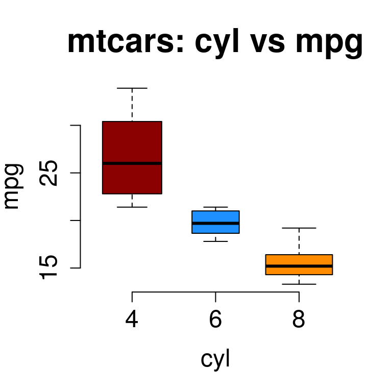
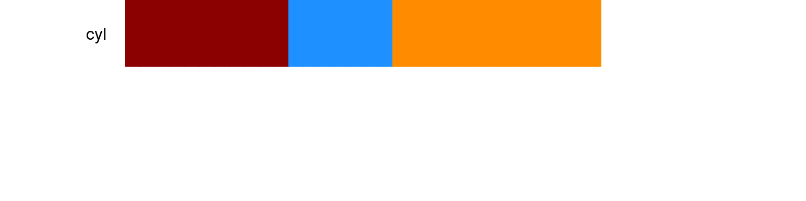
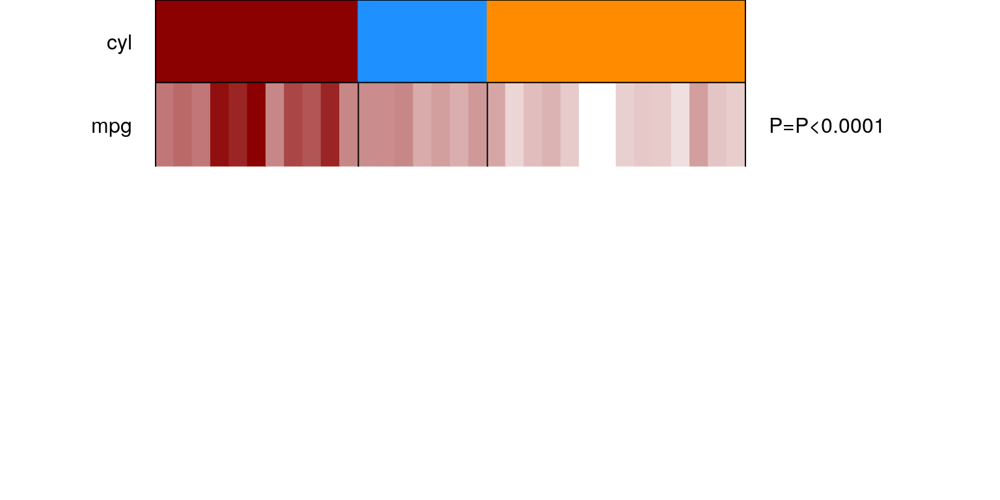
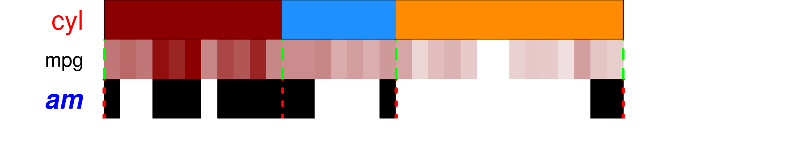

Tutorial: Function and usage panelmap
Arshi Arora
panelmap_tutorial.RmdMotivation
Let’s see a demonstration examples from the \(mtcars\) datasets.
Performing data exploration by groups or between two variables can be done by boxplot or correlation plots. Let’s see a boxplot between variables mpg and cyl, and a correlation plot between all the variables of mtcars dataset.
We see how mpg decreases as number of cyl increases. The same relationship can also be seen in the correlation plot at column 8, row 4.
This can get tedious, and a more visually appealing approach is required to understand the relationship between the variables at a glance.
print(kable(head(mtcars), "html", caption="mtcars dataset") %>%
kable_styling(bootstrap_options = "striped", full_width = F,position="left"))| mpg | cyl | disp | hp | drat | wt | qsec | vs | am | gear | carb | |
|---|---|---|---|---|---|---|---|---|---|---|---|
| Mazda RX4 | 21.0 | 6 | 160 | 110 | 3.90 | 2.620 | 16.46 | 0 | 1 | 4 | 4 |
| Mazda RX4 Wag | 21.0 | 6 | 160 | 110 | 3.90 | 2.875 | 17.02 | 0 | 1 | 4 | 4 |
| Datsun 710 | 22.8 | 4 | 108 | 93 | 3.85 | 2.320 | 18.61 | 1 | 1 | 4 | 1 |
| Hornet 4 Drive | 21.4 | 6 | 258 | 110 | 3.08 | 3.215 | 19.44 | 1 | 0 | 3 | 1 |
| Hornet Sportabout | 18.7 | 8 | 360 | 175 | 3.15 | 3.440 | 17.02 | 0 | 0 | 3 | 2 |
| Valiant | 18.1 | 6 | 225 | 105 | 2.76 | 3.460 | 20.22 | 1 | 0 | 3 | 1 |
#mtcars: mpg vs cyl
boxplot(mpg ~ cyl, data =mtcars, outline = FALSE, main = 'mtcars: cyl vs mpg', varwidth=T, cex.axis=1.5, cex.main=2, frame.plot=F, xlab="cyl", ylab="mpg", cex.lab=1.5)
beeswarm(mpg ~ cyl, data = mtcars, col = "cadetblue", pch = 16,cex=1.2, add = TRUE)
Example 1
We will illustrate panlemap by sorting mtcars data according to variable cyl and plotting mpg, vs, am and gear to understand the relationship between them.
#mtcars
#sort everything by cyl
mtcars.sort = mtcars[order(mtcars$cyl),]
#other features to plot
mat = mtcars.sort[,c("mpg","vs","am","gear")]
#color assigned to each feature
mat.col=list(am=c("white","black"), vs=c("white","black"), gear=c("yellow","orange","brown"), mpg=c("white", "darkred"))
#type of each feature. type=1 for discrete and type=2 for continuous.
mat.type= c(2,1,1,1)
tab=makepanel(gr=mtcars.sort$cyl, gr.name="cyl",gr.col=soln.col[1:3], mat=mat, mat.col=mat.col, mat.type=mat.type, border=TRUE, legend=TRUE, get.pval=TRUE, cex=1.5)
print(kable(tab, "html", caption="panelmap table") %>%
kable_styling(bootstrap_options = "striped", full_width = F,position="left"))| 4 | 6 | 8 | RowTotal | pval | |
|---|---|---|---|---|---|
| mpg | 26[21.4-33.9] | 19.7[17.8-21.4] | 15.2[10.4-19.2] | P<0.0001 | |
| NA | 0 | 0 | 0 | ||
| vs | P<0.0001 | ||||
| 0 | 1(9%) | 3(43%) | 14(100%) | 18(56.25%) | |
| 1 | 10(91%) | 4(57%) | 0(0%) | 14(43.75%) | |
| am | 0.0091 | ||||
| 0 | 3(27%) | 4(57%) | 12(86%) | 19(59.38%) | |
| 1 | 8(73%) | 3(43%) | 2(14%) | 13(40.62%) | |
| gear | P<0.0001 | ||||
| 3 | 1(9%) | 2(29%) | 12(86%) | 15(46.88%) | |
| 4 | 8(73%) | 4(57%) | 0(0%) | 12(37.5%) | |
| 5 | 2(18%) | 1(14%) | 2(14%) | 5(15.62%) |

Continuous variable mpg is represented as a spectrum of colors between white(low) and darkred(high). See how mpg decreases from cyl 4-6.
Other observations that we can make are -
cars with
cyl3 and 4 are mostly S shapevs=1, mostly manualam=1and have about 4-5 gears.cars with 5 cylinders
cylare mostly V shapevs=0, mostly automaticam=0and have 3 gears.
All this at one look!
To compare it with the full correlation matrix, we plot all the features.
Taking more features
#taking more features
mat.col=list(am=c("white","black"), vs=c("white","black"), gear=c("yellow","orange","brown"), mpg=c("white", "darkred"), disp=c("white", "black"), hp=c("white","black"), drat = c("white", "black"), wt=c("white", "darkblue"), carb=brewer.pal(n=6, name="BuGn") )
mat = mtcars.sort[,names(mat.col)]
#type of each feature. type=1 for discrete and type=2 for continuous.
mat.type=c(1,1,1,2,2,2,2,2,1)
tab=makepanel(gr=mtcars.sort$cyl, gr.name="cyl",gr.col = soln.col[1:3], mat=mat, mat.col=mat.col, mat.type=mat.type, border=TRUE, legend=TRUE, get.pval=TRUE,lncol=8,lwd=2, cex=1.5, lcex=1.5)Functions and Usage
There are three core functions of panelmap.
panelet_group
Given a solution, make a group panelet. Let cyl variable with values 4,6 and 8 be our group variable from package mtcars. Let’s assign the colors red, blue and green to its values as follows :-
#adjust margins and number of panelet values
par(mfrow=c(3,1),mar=c(0,8,0,14))
#sort the entire data frame according to the group solution you are interested in
mtcars.sort = mtcars[order(mtcars$cyl),]
#plot group
tt=panelet_group(gr=mtcars.sort$cyl, gr.col=c("red","blue","green"),gr.name="cyl",cex=1, border=FALSE, legend=FALSE)
cex controls the magnification of text labels on the left-hand side and is passed as part of (...). Other relevant parameters that can be passed are col - to change color of text labels. lty and lwd to change border line type and magnification, as in baseR. border and legend take logical values and their default value is FALSE.
Once we have a group panelet, we can start plotting other variables of interest.
panelet_category
This function plots discrete data type. Usage - function(pp,pp.col,soln, var.n="var.n"
NA.flag=FALSE, NA.col="grey", get.pval=FALSE, border=FALSE, border.col="black", legend=FALSE,...)
These are the default values to the function. There is an option to assign a color for NAs in the data by using NA.flag and NA.col. User can also control the color of border colors by border.col
#adjust margins and number of panelet values
par(mfrow=c(6,1),mar=c(0,8,0,14))
#sort the entire data frame according to the group solution you are interested in
mtcars.sort = mtcars[order(mtcars$cyl),]
#plot group
tt=panelet_group(gr=mtcars.sort$cyl, gr.col=c("red","blue","green"),gr.name="cyl",cex=1, border=FALSE, legend=FALSE)
#plot variable am
tt=panelet_category(pp=mtcars.sort$am, pp.col=c("white", "black"), gr=mtcars.sort$cyl, var.n="am", get.pval=TRUE)
#plot variable vs
tt=panelet_category(mtcars.sort$vs, c("white", "black"), mtcars.sort$cyl, "vs", get.pval=TRUE)
panelet_category also returns the summary of the variable with respect to the group variable along with an association test.
panelet_continuous
This function provides a gradient of the values present in the continuous variable. Note that this function plots a gradient and assigns colors relative to the range and magnitude of values in the variable. If the values are a mix of negative and positive values the gradient might look biased and lack in contrast. We will try to address this in a future functionality.
#adjust margins and number of panelet values
par(mfrow=c(6,1),mar=c(0,8,0,14))
#sort the entire data frame according to the group solution you are interested in
mtcars.sort = mtcars[order(mtcars$cyl),]
#plot group
tt=panelet_group(gr=mtcars.sort$cyl, gr.col=c("red","blue","green"),gr.name="cyl",cex=1, border=TRUE, legend=FALSE)
#plot variable mpg
tt =panelet_continuous(mtcars.sort$mpg, pp.col=c("white","darkred"), gr=mtcars.sort$cyl,var.n="mpg",NA.flag=FALSE, get.pval=TRUE, border=TRUE)makepanel
makepanel is a wrapper function that outputs a legend, an association table and the panelmap, all with one command. You need to provide the meta information of your data set like, colors, data type, labels color etc. See Example 1
Other features
custom visualizations
#adjust margins and number of panelet values
par(mfrow=c(4,1),mar=c(0,8,0,14))
#sort the entire data frame according to the group solution you are interested in
#use sorted mtcars
#plot group
tt=panelet_group(gr=mtcars.sort$cyl, gr.col=c("red","blue","orange"),gr.name="cyl", cex=2, col="red", border=TRUE)
#plot variable mpg
tt =panelet_continuous(mtcars.sort$mpg, pp.col=c("white","darkred"), gr=mtcars.sort$cyl,var.n="mpg", cex=1.5, col="black", border=TRUE,border.col="green", lwd=3, lty=2)
tt=panelet_category(pp=mtcars.sort$am, pp.col=c("white", "black"), gr=mtcars.sort$cyl, var.n="am", cex=2, col="blue", border=TRUE,border.col="red", lwd=4, lty=3, font=4)
handle NAs or missing data
am.na = mtcars.sort$am
am.na[c(1,10,20,30)] = NA
mtcars.sort$am.na = am.na
mat = mtcars.sort[,c("vs","am","am.na","gear")]
mat.col=list(am=c("white","black"), am.na=c("white", "black"), vs=c("white","black"), gear=c("yellow","orange","brown"))
mat.type= c(1,1,1,1)
tab=makepanel(gr=mtcars.sort$cyl, gr.name="cyl",gr.col=soln.col[1:3], mat=mat, mat.col=mat.col, mat.type=mat.type, border=TRUE, legend=TRUE, get.pval=TRUE, cex=1.7, NA.flag=TRUE, NA.col="grey",lncol = 7, lcex=1.3)
print(kable(tab, "html", caption="panelmap NA examaple") %>%
kable_styling(bootstrap_options = "striped", full_width = F,position="left"))| 4(n=11;34.38%) | 6(n=7;21.88%) | 8(n=14;43.75%) | RowTotal | pval | |
|---|---|---|---|---|---|
| vs | P<0.0001 | ||||
| 0 | 1(9%) | 3(43%) | 14(100%) | 18(56.25%) | |
| 1 | 10(91%) | 4(57%) | 0(0%) | 14(43.75%) | |
| am | 0.0091 | ||||
| 0 | 3(27%) | 4(57%) | 12(86%) | 19(59.38%) | |
| 1 | 8(73%) | 3(43%) | 2(14%) | 13(40.62%) | |
| am.na | 0.0707 | ||||
| 0 | 3(27%) | 4(57%) | 10(71%) | 17(53.12%) | |
| 1 | 6(55%) | 3(43%) | 2(14%) | 11(34.38%) | |
| NA | 2(18%) | 0(0%) | 2(14%) | 4(12.5%) | |
| gear | P<0.0001 | ||||
| 3 | 1(9%) | 2(29%) | 12(86%) | 15(46.88%) | |
| 4 | 8(73%) | 4(57%) | 0(0%) | 12(37.5%) | |
| 5 | 2(18%) | 1(14%) | 2(14%) | 5(15.62%) |

See how there are grey bars in panelet row am.na corresponding to NA at values 1,10,20 and 30.